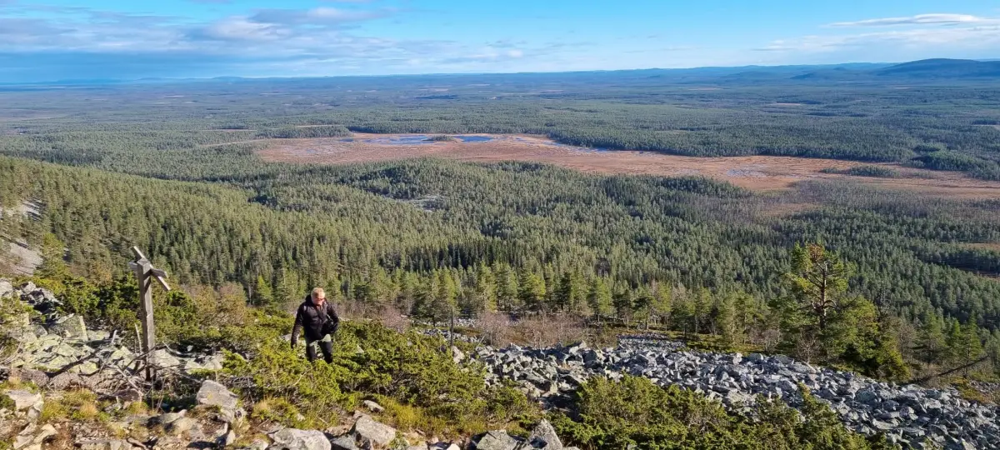

Jättäkää rauhaan meidän kansallispuistot!
Lauantaina 10. lokakuuta 2026 järjestettiin Keskustan Uudenmaan piirin syyskokous puoluetoimiston tiloissa Apollonkadulla. Kokouksessa porvoolainen kansanedustajaehdokas Outi Lankia piti puheen siitä, että kansallispuistot, luonnonpuistot ja luonnonsuojelualueet eivät saisi joutua teollisuuden ja louhinnan kohteeksi. Sanomaan tarttui jopa valtioneuvos Matti Vanhanen puheessaan. Lopulta esitys muuttui koko piirin kannanotoksi, jota kannatti salissa kaikki.
Niin muuten kannatin minäkin. Tuen erittäin lämpimästi Outin ehdotusta siitä, että kielletään teollisuushankkeet kansallispuistoista, luonnonpuistoista ja luonnonsuojelualueilta.
Vietin tuossa hiljattain viikon verran Lapissa, Pyhä-Luostossa vaimon kanssa. Siellä tuli pyörittyä ja vierailtua Pyhä-Luoston kansallispuiston alueella. Kävimme patikoimassa Noitatunturin huiputuskierroksen. Noitatunturi on korkein Pyhätunturin huipuista ja se nousee 540 metrin korkeuteen merenpinnasta. Kiipeäminen sinne otti aikansa ja siinä louhikossa kömpiminen pakotti pitämään taukoja — ja maisemia katsellessa niitä taukoja tuli pidettyä oikein mielellään. Maisemallinen arvo tällä oli mieletön. Pian huipun jälkeen käveltiin tunturin vastapuolen polkuja pitkin alas ja maisemat jatkuivat kilometrikaupalla horisonttiin.
Nyt yritän kuvitella, miltä näyttäisi, jos tämän tunturin välittömään läheisyyteen rakennettaisiin esimerkiksi datakeskus tai avolouhos. Koko se koskematon maisema, koskematon luonto, olisi lopullisesti pilalla. Vain taloudellisten pikavoittojen nimissä riistäisimme tulevilta sukupolvilta mahdollisuuden nauttia tästä luonnosta. Tätä ei voida hyväksyä. Talouskasvulle on kestävämpiäkin keinoja. Kansallispuistot, luonnonpuistot ja luonnonsuojelualueet pitää olla suojeltuja teollisuus- ja kaivoshankkeilta.
Kansallispuistojen, luonnonpuistojen ja luonnonsuojelualueiden suojeleminen teolliselta rakentamiselta pitäisi olla itsestäänselvyys. Kuitenkin nämäkin ovat kartalle ja maastoon määriteltyjä rajoja, joiden sisälle ei saa rakentaa. Suojeltujen alueiden ulkopuolelle sijoittuvien teollisuus- ja kaivoshankkeiden vaikutukset täytyy ottaa vakavasti. Teollisuus- ja kaivostoiminnan toteuttajien tulee varmistaa, että niiden toiminnasta ei koidu haittaa ympäristölle. Lainsäädäntöä on muutettava niin, että ympäristön vahingoittamisesta pitää olla tuntuvat seuraukset. Kaivosyhtiöt ja niiden aiheuttamat veronmaksajille koituneet kustannukset ansaitsevat oman kirjoituksen — enkä mene tässä siihen sen enempää.
Kansallispuistot, luonnonpuistot ja luonnonsuojelualueet eivät ole vain tyhjiä alueita, jotka odottavat seuraavaa hyödyntämismahdollisuutta. Ne ovat yhteistä kansallisomaisuuttamme, joiden arvo syntyy niiden luonnonmukaisesta säilymisestä. Niiden arvo näkyy myös siinä rauhoittumisen ja hyvinvoinnin tunteessa, jonka ihminen kokee vieraillessaan näissä ainutlaatuisissa luontokohteissa.
Kannatan täydestä sydämestä sitä, että kansallispuistot ja luonnonsuojelualueet jätetään rauhaan.
Juhani Sillanpää
Kansanedustajaehdokas
Vantaa